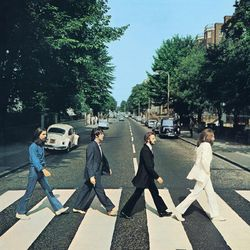
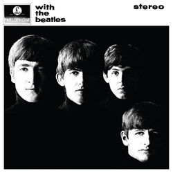
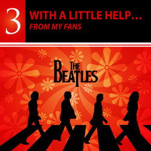
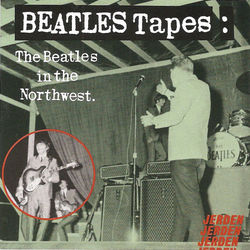

Resultados de the beatles
Canciones

|
Let It Be (Remastered 2009) The Beatles | The Beatles | Let It Be (Remastered) | 04:03 |
| Hey Jude (Remastered 2015) The Beatles | The Beatles | 1 (Remastered) | 07:05 | |
| Doy Tripper (Remastered 2015) The Beatles | The Beatles | 1 (Remastered) | 02:49 | |
|  | Here Comes The Sun (Remastered 2009) The Beatles | The Beatles | Abbey Road (Remastered) | 03:05 |

|
Michelle (Remastered 2009) The Beatles | The Beatles | Rubber Soul (Remastered) | 02:42 |
| Help! (Remastered 2015) The Beatles | The Beatles | 1 (Remastered) | 02:19 |
Álbumes
The Beatles (Remastered)
The Beatles

Sgt. Pepper's Lonely Hearts Club Band
The Beatles
Let It Be (Remastered)
The Beatles

Magical Mystery Tour (Remastered)
The Beatles

Yellow Submarine Songtrack
The Beatles

Please Please Me (Remastered)
The Beatles
Artistas
The Beatles
5.699.029 fans
The Beatles Recovered Band
187.118 fans
The Beatles Tribute
636 fans

The Beatles Acoustic Trio
525 fans
The Beatles Symphony Orchestra
708 fans

The Beatles Revival Band
1767 fans
295 canciones
| CANCIÓN | ARTISTA | ÁLBUM | D. | |
|---|---|---|---|---|
|
|
Let It Be (Remastered 2009) The Beatles | The Beatles | Let It Be (Remastered) | 04:03 |
| Hey Jude (Remastered 2015) The Beatles | The Beatles | 1 (Remastered) | 07:05 | |
| Doy Tripper (Remastered 2015) The Beatles | The Beatles | 1 (Remastered) | 02:49 | |
| Here Comes The Sun (Remastered 2009) The Beatles | The Beatles | Abbey Road (Remastered) | 03:05 | |
|
|
Michelle (Remastered 2009) The Beatles | The Beatles | Rubber Soul (Remastered) | 02:42 |
| Help! (Remastered 2015) The Beatles | The Beatles | 1 (Remastered) | 02:19 | |
| Yesterday (Remastered 2015) The Beatles | The Beatles | 1 (Remastered) | 02:05 | |
|
|
Twist And Shout (Remastered 2009) The Beatles | The Beatles | Please Please Me (Remastered) | 02:35 |
| Come Together (Remastered 2009) The Beatles | The Beatles | Abbey Road (Remastered) | 04:19 | |
| Here Comes The Sun (2019 Mix) The Beatles | The Beatles | Abbey Road (Remastered) | 03:05 | |
| Eleanor Rigby (Remastered 2015) The Beatles | The Beatles | 1 (Remastered) | 02:05 | |
| I Want To Hold Your Hand (Remastered 2015) The Beatles | The Beatles | 1 (Remastered) | 02:25 | |
| Blackbird (Remastered 2009) The Beatles | The Beatles | The Beatles (Remastered) | 02:18 | |
| All You Need Is Love (Remastered 2015) The Beatles | The Beatles | 1 (Remastered) | 03:47 | |
|
|
In My Life (Remastered 2009) The Beatles | The Beatles | Rubber Soul (Remastered) | 02:26 |
| Something (Remastered 2009) The Beatles | The Beatles | Abbey Road (Remastered) | 03:02 | |
| Come Together (2019 Mix) The Beatles | The Beatles | Abbey Road (Remastered) | 04:20 | |
| While My Guitar Gently Weeps (Remastered 2009) The Beatles | The Beatles | The Beatles (Remastered) | 04:45 | |
| She Loves You (Mono / Remastered) The Beatles | The Beatles | 1 (Remastered) | 02:20 | |
| Penny Lane (Remastered 2015) The Beatles | The Beatles | 1 (Remastered) | 03:00 | |

|
Don't Let Me Down (Remastered 2009) The Beatles | The Beatles | Past Masters (Vols. 1 & 2 / Remastered) | 03:35 |
| Love Me Do (Mono / Remastered) The Beatles | The Beatles | 1 (Remastered) | 02:20 | |
| A Hard Day's Night (Remastered 2015) The Beatles | The Beatles | 1 (Remastered) | 02:32 | |
| Can't Buy Me Love (Remastered 2015) The Beatles | The Beatles | 1 (Remastered) | 02:11 | |
|
|
Strawberry Fields Forever (Remastered 2009) The Beatles | The Beatles | Magical Mystery Tour (Remastered) | 04:07 |
286 álbumes
The Beatles (Remastered)
The Beatles
Sgt. Pepper's Lonely Hearts Club Band
The Beatles
Let It Be (Remastered)
The Beatles
Magical Mystery Tour (Remastered)
The Beatles
Yellow Submarine Songtrack
The Beatles
Please Please Me (Remastered)
The Beatles

Anthology 3
The Beatles

With The Beatles (Remastered)
The Beatles

The Beatles 1967 - 1970 (Remastered)
The Beatles
The Beatles 1962 - 1966 (Remastered)
The Beatles

The Beatles
Aleh Ferreira

Yellow Submarine (Remastered)
The Beatles
Love
The Beatles

The Beatles (White Album / Remastered)
The Beatles
The Beatles
Acoustic Lounge
I Want The Beatles for Christmas
Various Artists
The Beatles
James Bourne
The Beatles Classics
London Symphony Orchestra

Best of The Beatles Vol.1
The Beatles Tribute
1 (Remastered)
The Beatles

Anthology 2
The Beatles
The Beatles Nova
Grazyna Auguscik
Beatles and Chill
Yoga Beats

Blackbird - The Beatles Album
Milos Karadaglic

Glee Sings The Beatles
Glee Cast
72 artistas
The Beatles
5.699.029 fans
The Beatles Recovered Band
187.118 fans
The Beatles Tribute
636 fans
The Beatles Acoustic Trio
525 fans
The Beatles Symphony Orchestra
708 fans
The Beatles Revival Band
1767 fans

The Beatles Covered
86 fans
The Beatles Tribute Band
480 fans
The Beatles Complete
13 fans

The Silver Beatles
288 fans
The Beatles Recovered Band
383 fans
The Beatles Symphonic Orchestra
136 fans
The Ultimate Beatles Covered
748 fans
Yesterday - A Tribute To The Beatles
1676 fans
The Beatles Revival Band
193 fans
Made Famous By The Beatles
93 fans

Beatles Fan Club - (All Over The Place)
3583 fans
The Bornagen Beatles
57 fans
The Beatles Connection
377 fans

The Beatles interviews
751 fans
Tony Sheridan & The Beatles
77 fans

The Sounds Of The Beatles
13 fans

The New Beatles
119 fans

The Beatles With Tony Sheridan
150 fans